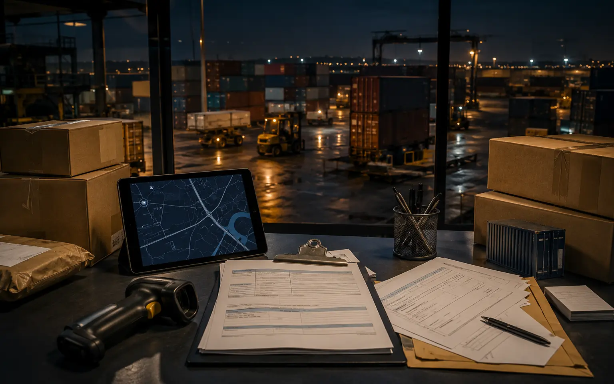
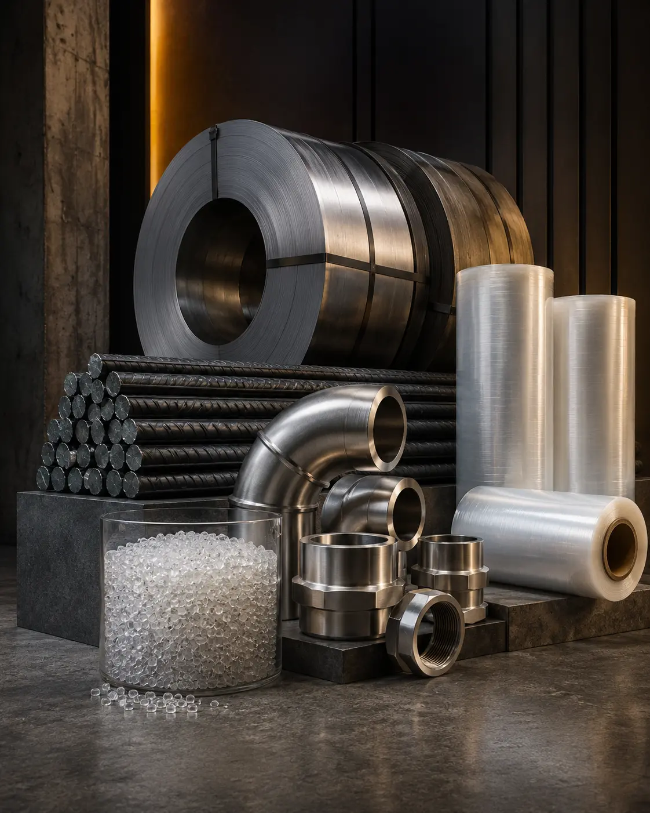
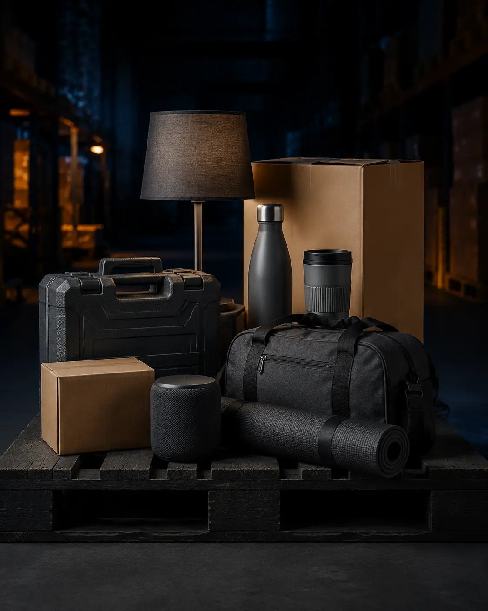

Más capacidad
Marítimo
Carga consolidada LCL o contenedor completo FCL para inventario, maquinaria y compras de volumen.
Coordinamos tu carga desde fábrica hasta destino: consolidación, flete marítimo, aduana y entrega final, con un solo equipo acompañándote.
Importar no es solo mover una caja. Es elegir bien al proveedor, calcular el costo completo, preparar documentos y coordinar cada actor sin perder visibilidad.
Centralizamos ese proceso para empresas, emprendedores y compradores que necesitan una ruta clara hacia Bolivia.
Carga consolidada LCL o contenedor completo FCL para inventario, maquinaria y compras de volumen.
Alternativa para repuestos críticos, muestras, electrónicos o productos con ventana corta de entrega.
Ingreso y distribución desde puertos y países vecinos hasta tu ciudad o centro de operaciones.

Coordinación documental, seguro, aduana y seguimiento para que tomes decisiones con información.
Explora algunas de las categorías que podemos coordinar para tu negocio. Si tu producto no aparece, lo evaluamos y diseñamos una ruta de acuerdo con tus necesidades.
Equipos, bombas y componentes
Autos, camiones y autopartes
Telas, prendas e insumos
Didácticos, infantiles y recreativos
Cocina, limpieza y climatización
Dispositivos, accesorios y control

07Acero, polímeros y manufactura

08Evaluamos tu producto y su ruta
INE Bolivia y WITS/UN Comtrade. Las categorías son referenciales: cada producto requiere validar origen, clasificación, permisos, documentación y costos antes de importar.
Consultar INERevisamos producto, origen, cantidad, valor, peso y destino para recomendar la ruta correcta.
Estimamos flete, seguro, documentación, tributos y costos operativos antes de mover la carga.
Trabajamos con proveedor, transportistas y agentes para embarcar, consolidar y monitorear.
Acompañamos la nacionalización y coordinamos la entrega en tu almacén o punto acordado.
Antes de confirmar una compra revisamos la información disponible para detectar restricciones, documentos necesarios y costos que podrían cambiar tu decisión.
Cada carga es distinta. Estas respuestas ayudan a preparar la primera conversación.
Sí. Podemos ayudarte a ordenar criterios de compra y revisar la información comercial del proveedor antes de definir el transporte.
Sí. La consolidación permite compartir espacio marítimo o aéreo cuando no necesitas un contenedor completo.
Depende del origen, modalidad, disponibilidad, tránsito y despacho. En la cotización planteamos un rango realista para tu operación.
Alimentos, cosméticos, farmacéuticos, químicos y ciertos equipos pueden requerir autorizaciones. La validación se realiza según el producto exacto y normativa aplicable.
Presentamos los conceptos de costo disponibles y explicamos cuáles son estimados o dependen de la clasificación arancelaria y la documentación final.
Conversemos personalmente sobre tu próxima importación y la ruta logística más conveniente para tu negocio.
NavyComex FRG2+JWG, zona Antofagasta, Distrito 3 El Alto, La Paz, BoliviaCuéntanos qué deseas importar y recibe una orientación inicial para elegir la ruta adecuada.